Procedure
From the Internet we have downloaded the latest version of Ukelele and have put it into the Applications folder of our computer. We opened the Ukelele folder, and then the System Keyboards folder, and finally the Roman folder. We double-clicked the U.S..keylayout icon which appears in the Finder window. We can read “Ukelele” in the upper left corner of our screen, next to the Apple menu. We perceive a Hawaiian ukelele in our Dock. We intend to transform — on the levels lower case, upper case and caps lock — the keys of this US keylayout [ ] ; and ' into the dead keys ´ ` ˆ and ¨. The keyboard position is lower case. We shall go through the following steps.
-
1.On the menu bar choose View → Keyboard Type → Select Original USB and ISO, then click OK.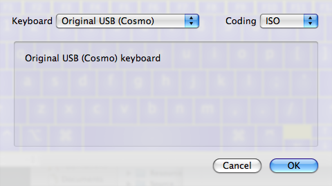
-
2.Choose Keyboard → Set Keyboard Name. Set the name to “My US” and click OK.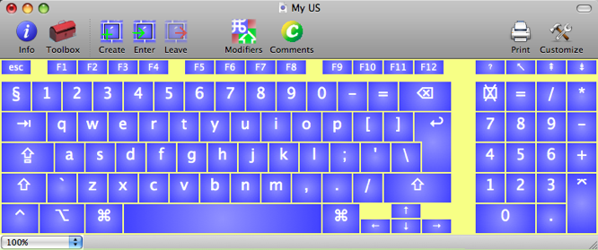
-
3.Choose Keyboard → Set Keyboard ID → Unicode and be sure the appearing number is preceded by a minus (-). If it is not there we shall have to put it there. Click OK.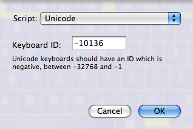
-
4.Choose Ukelele → Preferences, Dead Keys pane; we make sure that “Ask for a terminator” is not checked. If it is, we uncheck it. Close the preferences window.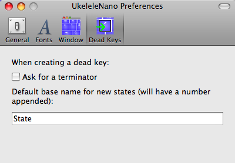
-
5.Choose Keyboard → Create dead key (or click the Create button on the toolbar).
-
6.We make sure we are still in the lower case and we press the [ key.
-
7.In the dialog that asks “Choose an existing dead key state”, we choose s1 (which stands for the acute accent) and click OK.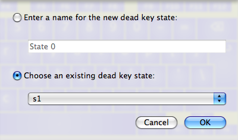
-
8.Choose Keyboard → Enter Dead Key State (or click the Enter button on the toolbar), and choose s1 from the list.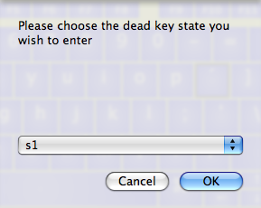
-
9.We should now see the correct output (in this case the acute accent) on the vowels of the original keyboard, which remains in its lower case.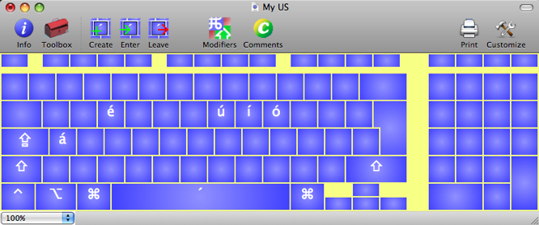
-
10.Choose Keyboard → Leave Dead Key State (or click the Leave button on the toolbar). At this point, at the place of the former [ key in the lower case of the original keyboard, we see the acute accent surrounded by a square frame. This means that the key we have just finished working on has become a dead key.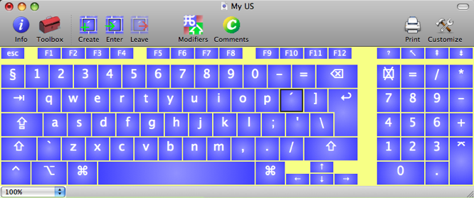
-
In order to complete our task we shall have to repeat the points 4 to 9 another eleven times: 3 times to do the rest of the lower case, 4 times to do the upper case and 4 times to do the caps lock. In step 7, the so-called “names” of the dead key states are the letter s followed by a number. Each number corresponds to an accent:
-
s1 → Acute
-
s2 → Grave
-
s3 → Circumflex
-
s4 → Dieresis
-
s5 → Tilde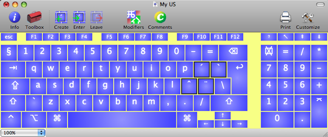
-
11.We now have to restore the characters that we removed to make our dead keys. There are eight characters that we have lost: open and closing square brackets ([]), opening and closing curly brackets ({}), semicolon (;), colon (:), and single and double quotes (‘“). We will put these on the keys that originally had the digits 1 to 8. One way to do this is to double-click the “1” key, and then enter the opening square bracket as the new text in the dialog that appears, and then repeat this for all the other characters.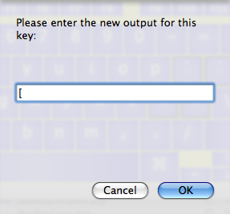
Alternatively, you can select the ] character in some other program or the character palette, and then drag it onto the “2” key, and repeat with the other characters.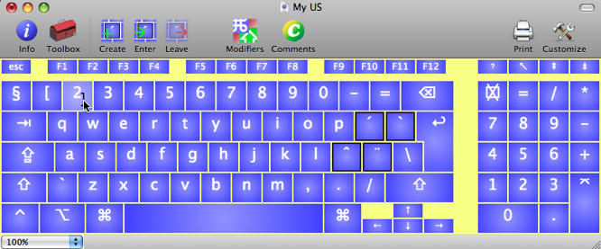 -
12.Be sure “Ukelele” is still visible on the menu bar next to the Apple logo. File → Save As → Give your keyboard a short name (ending with “.keylayout” if the extension is not hidden), such as “My US”, and save it. The keyboard layout needs to be in one of several locations. For most people, the best location is within your home directory. Open the Library folder, and see if there is a folder called Keyboard Layouts. If not, create a folder with that name. Your new keyboard layout should be stored in this folder.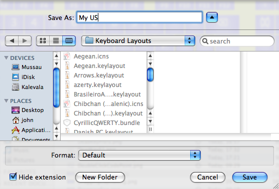
-
13.Now you need to log out, and then log in again.
-
14.Now open System Preferences, and find the International pane. It has a United Nations flag on it, and is usually up near the top. When the International pane is showing, click on the Input Menu tab. There should be a list of many different keyboard layouts and other input methods that you have installed (most are installed by default when you install Mac OS X). You should look for the name you gave your keyboard layout in this list. You may want to click on the Name header to get them sorted alphabetically. To the left of the name, there is a check box, which will probably not be checked. Check it. At the bottom of the preference pane, there is another check box labelled “Show input menu in menu bar”. Check this one, too. You can now quit System Preferences.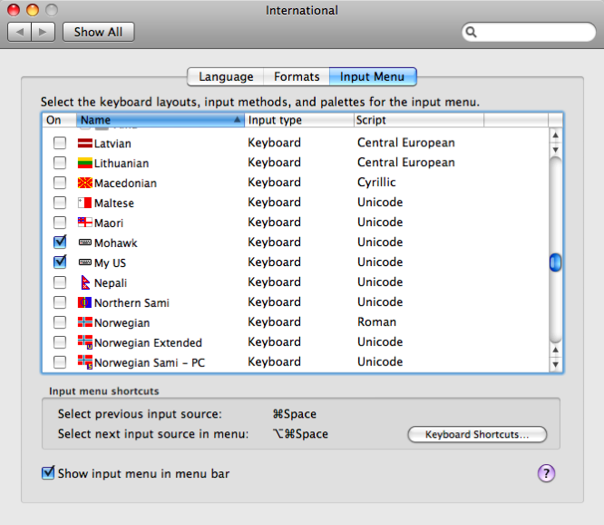
-
15.There is now a flag icon towards the right hand end of the menu bar, which is the input menu. Click on this, and you should see your keyboard layout listed. Choose it from the menu. Your keyboard layout is now active, and can be used. Note that you may have to choose it again after you switch to another application. And that is it!